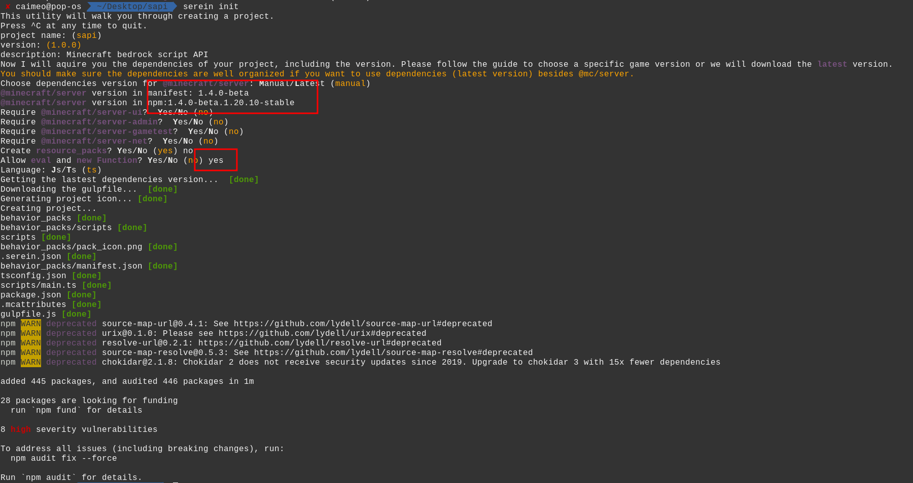
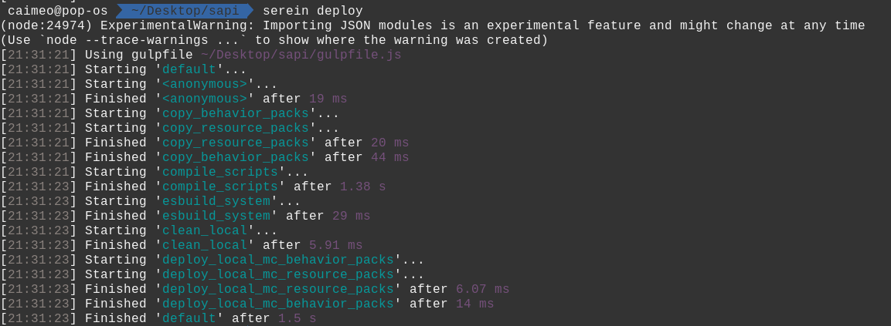
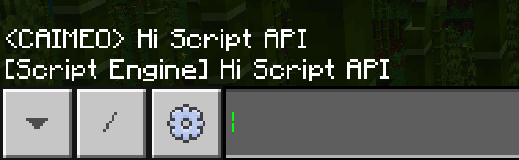

从Script API开始的函数式编程：写一个简单的体素几何库
CAIMEO & Lampese
前言
Script API 是Minecarft Bedrock的一个API，最早是开发者用来测试游戏内容的（也有Gametest这个名字）。而后来Mojang为它加入了很多方便的游戏事件和方法，使得Gametest具备了编写模组的能力（正式成为Script API）。而国内相关资料较少（或者过时），以Typescript为语言的资料更是稀缺，希望本篇文章能够填补一些空缺。除了 Script API 之外，本文还会渗透一些函数式编程、体素几何的思想。
今年我的男友于寒假期间我们完成 Serein 脚手架的开发后写成了这篇文章，本意是想向各位基岩版开发者介绍一下函数式编程，忐忑的发出后反响还不错。本来是由我来主笔后一部分的，但我这一部分的内容和前一部分基本上毫无关系，有些难以接手便一直搁置了。时逢高考假，回家无事可做便继续把这篇文章续写完成了，如今我的学校一轮复习已经开始，这是难得几次的机会了。
同时也祝此时此刻正在高考的他考试顺利。
先决条件
编程语言：本文面向具有一定 JavaScript 基础的读者，学习过 TypeScript 则更好（若没学过，你可以把 TypeScript 当成具有类型标记的JavaScript）。
行为包：读者最好有一定的Minecraft行为包基础知识，本文不会介绍行为包的结构。
开发环境：推荐使用
操作系统：Linux (安装Mcpelauncher，这也是笔者使用的环境) / Windows（安装 Minecraft Windows 10）
考虑到很多开发者都在 Android 平台进行开发，我推荐使用 Termux + SpaceVIM环境。但最好还是使用PC。
游戏版本：Minecraft Bedrock 1.19.51
编辑器：Visual Studio Code
包管理工具：NodeJS NPM
项目管理：Serein （下文会告诉你安装方式）
准备工作
下载Serein
Serein 是一个为 Minecraft Bedrock Edition Script API 开发的脚手架项目，可以帮助开发者高效、优雅地创建和管理项目。利用它可以帮助我们快速构建项目并自动部署，很方便进行测试。
打开 cmd 或者 Linux Terminal， 输入以下命令来安装 serein 并初始化我们的项目：
1npm i @pureeval/serein -g2mkdir ts-mc-vg && cd ts-mc-vg3serein init按照流程配置项目（注意框选部分）：

之后在Visual Studio Code中打开 ts-mc-vg 文件夹，开始编写我们的程序。
项目结构
x1# behavior_packs文件夹是存放行为包信息地方2├── behavior_packs3│ ├── manifest.json4│ ├── pack_icon.png5│ └── scripts6├── gulpfile.js7├── package.json8├── package-lock.json9
10# scripts 文件夹存储 scripts文件11├── scripts12│ └── main.ts13└── tsconfig.jsonserein 利用 gulp 来完成自动部署和打包功能，因此 gulpfile 是必须的（你也可以根据自己的实际需求修改）
main.ts 是脚本入口，之后它会被编译成 js 文件
使用Serein管理项目
Serein 提供了许多方便的函数供打包、测试使用。下面介绍几个常见的命令。
pack
自动打包项目，保存到 build/ 目录下

deploy
自动部署到游戏路径（Development），会根据不同平台自动处理（包括Linux/Android/Windows）

测试流程
先写一段简单的代码来熟悉一下 serein的工作流。
这段代码的作用是复读玩家的话，不懂里面用到的函数没关系，后文会解释：
xxxxxxxxxx91// main.ts2import { world, BeforeChatEvent } from "@minecraft/server";3const overworld = world.getDimension("overworld");4
5function onChat(e: BeforeChatEvent) {6 overworld.runCommandAsync(`say ${e.message}`)7}8
9world.events.beforeChat.subscribe(onChat);接下来运行deploy自动部署行为包：
xxxxxxxxxx11serein deploy接下来可以开始测试了。
打开Minecraft，创建一个新的世界
选择创造模式
添加你的行为包
打开实验功能（Beta APIs experiment）
进入世界
在聊天界面发送 hello，不出意外的话，会看到如下输出：
xxxxxxxxxx11[Script Engine] hello

其它测试技巧：
可以在设置打开调试控制台，便于查看错误信息
执行
serein watch，gulp会监控代码修改，并自动部署到游戏中可在在游戏中使用
/reload命令重新加载行为包
Gametest框架简介
事件
事件系统，简单来说就是通过监听事件状态的变化，并在发生变化时做出相应的动作。在Minecraft中世界中发生的各种事件（如实体死亡、方块破坏、聊天信息等）都包含在了 world.events 中，你可以通过 subscribe 方法来设置事件的回调函数。完整事件列表可以查阅官方文档：
https://learn.microsoft.com/en-us/minecraft/creator/scriptapi/
举个例子，我们可以监听 BeforeChatEvent， 这个事件会在玩家尝试发送聊天信息的时候调用。
xxxxxxxxxx101import { world, BeforeChatEvent } from "@minecraft/server";2
3// Kill sender named lampese4function onChat(e: BeforeChatEvent) {5 if (e.sender.name === 'lampese') {6 e.sender.kill();7 }8}9
10world.events.beforeChat.subscribe(onChat);对于不熟悉ts的读者，e: BeforeChatEvent正是一个类型标注，格式是 var: Type 此处用到了参数 e 的 sender: Player 属性，随后调用了 kill()方法杀死玩家。
动作
事件系统使我们得以监听 Minecraft世界的信息，但目前我们还不能影响世界，为了达到这个目的，我们需要 World 和 Dimension 类（不过你并不能构造它们，只能通过 Script API 提供的函数获取），@minecraft/server 包中包含了 world 对象，你可以通过它提供的方法来访问世界的一些属性，比如玩家 （getAllPlayers） ，维度（getDimension） 等。
此处要重点介绍的是 Dimension，它同样也是无法构造的，只能通过 getDimension 方法获取。一般的（至少在本文如此），我们只需要获取主世界（overworld）。
xxxxxxxxxx11const overworld = world.getDimension("overworld");Dimension 提供了更多修改世界的方法，加入 getBlock 是本文的主题。

关于其他函数的使用方法可以查阅官方文档：
https://learn.microsoft.com/en-us/minecraft/creator/scriptapi/minecraft/server/minecraft-server
副作用
在本文，我们将一切能够影响Minecraft的函数称为具有副作用（Side effect）的函数，而无法对世界产生影响的函数称为纯函数（Pure function）。（注：此处对纯函数的定义不同于函数式编程中的，函数式编程纯函数限制更多一些）。
函数式编程的核心思想之一，就是尽可能地分离具有副作用的函数，组合多个纯函数以构造新的函数。
这么做的好处有很多，除了简化Debug流程外，Script API本身的特性也是一个重要因素。
Script API正处于成长期，这意味着它的API在不断更新，在社区里我见到过不少因为API更迭而不得不花费大量时间修改脚本的开发者，而如果分离了，那么我们只需要修改一小部分具有副作用的函数。
我们尽量使用纯函数，只在必要时使用非纯函数。
体素几何
体素是什么？
体素（Voxel），是体积像素（Volume Pixel）的简称。类似二维空间的最小单位【像素】，体素是三维空间分割上的最小单位。我们可以给空间建立坐标系便于访问每个体素的坐标（正如我们在二维空间所做的事一样！）
Minecraft一切方块都有其坐标，显然也是个体素游戏，本文的标题【体素几何】就暗示了我们将在Minecraft世界中构造各种有趣的几何体（实际上并不止如此）。
坐标表示
在开始编写几何算法之前，我们先来搞清楚几个概念。
空间和点
空间（Space）是一个数学概念，是指一种具有特殊性质及一些额外结构的集合，最常见的有拓扑空间、射影空间等。如果忽略方块类型，只考虑方块的有无，那么Minecraft世界可粗略看成一个
在计算机中表示一个空间的方式有很多，比如八叉树和数组。在此我们使用数组（因为这样很容易编写
xxxxxxxxxx171class Point {2 x: number;3 y: number;4 z: number;5
6 constructor(x: number, y: number, z: number) {7 this.x = x;8 this.y = y;9 this.z = z;10 }11
12 add(v: Point) {13 return new Point(this.x + v.x, this.y + v.y, this.z + v.z)14 }15}16
17type Space = Point[]然后定义投影函数，此处只是简单的坐标投射（实际上，你还可以定义其他类型的投影函数，取决于需求）：
其中
用ts代码表示就是（因为Minecraft会自动 round，所以我们不需要多写取整函数）：
xxxxxxxxxx101import { Vector3, MinecraftBlockTypes, BlockLocation } from "@minecraft/server";2
3// projection (Effect)4function projection(space: Space, origin: Point) {5 space.forEach((pos) => {6 const v = pos.add(origin)7 overworld.getBlock(new BlockLocation(v.x, v.y, v.z))8 .setType(MinecraftBlockTypes.ironBlock);9 });10}dimension.getBlock可以获得某个位置的方块对象，参数是BlockLocationsetType可以改变方块类型，此处写死为 ironBlock
简单几何
我们知道，三维空间
其中
将其中一点固定为原点，我们用ts代码实现这个度量函数：
xxxxxxxxxx11const metrix_origin = ({x,y,z}:Point) => Math.sqrt(x * x + y * y + z * z);接下来可以写出球的定义：
xxxxxxxxxx21const R_3: Space;2const sphere = (r: number) => R_3.filter((P) => metrix_origin(P) <= r);看起来不错，但是这里的
展开球的数学表达式可以得到：
注意到：
则必有：
同理可得：
最后：
因此我们只需要遍历
关系链是：
到此，
由于子空间
xxxxxxxxxx11const V: (r: number) => Space;接下来我们写一个辅助函数帮助我们构造区间：
xxxxxxxxxx21type Interval = number[]2const range = (a: number, b: number, step : number = 1): Interval => Array.from({ length: (b - a) / step + 1}, (_, i) => a + (i * step))注意到
xxxxxxxxxx31// 类型标记过于复杂，用@ts-ignore偷懒好了2// @ts-ignore3const cartesian = (a) => a.reduce((a, b) => a.flatMap(d => b.map(e => [d, e].flat())));由于是通用的笛卡尔积，所以它的返回值是 number[][] ，需要将其转换为 Space：
xxxxxxxxxx11const fromList = (cp: number[][]): Space => cp.map(([x, y, z]) => new Point(x, y, z))现在我们就可以写出函数
xxxxxxxxxx11const V = (r: number): Space => fromList(cartesian(range(-r, r), range(-r, r), range(-r, r)))最后我们可以写出 sphere 的定义，非常简单。
xxxxxxxxxx11const sphere = (r: number) => V(r).filter(P => metrix_origin(P) <= r);组合的力量
读者或许注意到了，我使用了非常多的辅助函数，这么做有什么好处，直接写个循环不是更快吗？其实这是一种函数式编程的思维，从中学阶段我们就学习过函数的概念，而函数的组合是非常强大的工具，这能够复用很多代码。比如我现在要写一个 round 函数来画一个垂直于
xxxxxxxxxx21const V2 = (r: number): Space => fromList(cartesian(range(-r,r),[0],range(-r,r)))2const round = (r: number) => V2(r).filter(P => metrix_origin(P) <= r);太棒了！一个绘制圆的函数。
那如果我要绘制椭圆面呢？在高中我们就学过椭圆的标准方程：
要获得椭圆面，只需要修改等式为不等式：
给出一个点，我们可以写出判断它是否在椭圆面上的代码（此处以垂直
xxxxxxxxxx11const inEllipse = ({x,y,z}: Point, a: number, b: number) => x * x / (a * a) + z * z / (b * b) <= 1我们之前写的 filter 参数也是一个判断点是否位于球、圆上的函数：
xxxxxxxxxx11const inSphere = (P:Point,r:number) => metrix_origin(P) <= r并且椭圆的参数显然满足：
那么椭圆的遍历空间
xxxxxxxxxx11const V3 = (a: number, b: number) => fromList(cartesian(range(-a, a), [0], range(-b, b)));最后我们写出构造椭圆面的函数：
xxxxxxxxxx11const ellipse = (a: number, b: number) => V3(a, b).filter(P => inEllipse(P,a,b));再抽象一点？
Programming is an abstraction of process, we judge when and how.
--- Lampese
函数复用非常优雅，我们可以轻而易举地定义很多不同的几何函数，只需要知道它的方程。不过，这并不是终点，读者应该注意到了，我们的程序还有很多相似之处，为什么不再进一步抽象呢？

我们再观察对比一下这几个定义：
xxxxxxxxxx31const sphere = (r: number) => V(r).filter(P => inSphere(P,r));2const round = (r: number) => V2(r).filter(P => inSphere(P,r));3const ellipse = (a: number, b: number) => V3(a, b).filter(P => inEllipse(P,a,b));不难注意到这些几何结构都是由一个有限的空间，利用过滤器（filter）去除了不在某个结构上的点所得到的。所以我们可以写出如下函数。
xxxxxxxxxx31type Cond = (P:Point) => boolean2const gen = (S: Space, Expr: Cond) => S.filter(Expr)3// gen -> generate这个 Expr: Cond 很有意思，但别忘了
xxxxxxxxxx11inSphere: (P: Point, r: number) => boolean还有一个参数 r，这可不妙，而且 inEllipse 函数甚至还有两个参数。和 Expr 的类型签名不相符。这种情况该如何处理？
以 inEllipse为例，先看看我们能做点什么。
xxxxxxxxxx11inEllipse: (P:Point, a: number, b: number) => Space如果我们想要调用这个函数，就必须传递三个参数，假设你现在只有两个参数 a,b，传入函数应该发生什么？
xxxxxxxxxx11inEllipse(undefined,a,b) => ?对于原本的函数定义肯定会报错，因为第一个参数是 undefined。想象一下，如果真的只应用两个参数，这个函数应该返回什么才合理？一个合理的考虑就是返回一个接受 P:Point 单参数的函数，我们修改一下 inEllipse的定义：
xxxxxxxxxx11const inEllipse = (a: number, b: number) => (P: Point) => inEllipse(a,b,P)看起来一切顺利，我们可以通过如下方式调用它：
xxxxxxxxxx21const partialInEllipse = inEllipse(a, b);2partialInEllipse(P);偏函数
偏函数（Partial Function）是指一部分参数被固定的函数，调用这个偏函数只需要传入原函数没有固定的参数。上文的 partialInEllipse 就是一个偏函数（它的名字就暗示了这一点）。
接下来我们修改 inSphere 函数：
xxxxxxxxxx11const inSphere = (r: number) => (P: Point) => metrix_origin(P) <= r我们构造的偏函数都具有 (P:Point) => boolean 的签名，这下我们可以利用 gen 了！
xxxxxxxxxx31const sphere = (r: number) => gen(V(r), inSphere(r));2const round = (r: number) => gen(V2(r), inSphere(r));3const ellipse = (a: number, b: number) => gen(V3(a, b),inEllipse(a,b));现在简洁地有点过分了。
通用构造
抽象似乎已经达到极限了，我们还能进一步扩展我们的程序吗？
答案是有，别忘了我们的核心是体素几何，如果只支持圆、球、椭圆，那限制也太大了。在初中我们就学过，在笛卡尔坐标系中，一个包含
还有椭圆面的扩展，椭球：
曲线的数量太多了，我们不可能考虑无限的情况，我们希望用户可以根据自己的需求，输入一个表达式，然后获得一个曲面，也就是我们期望编写一个这样的函数：
xxxxxxxxxx11generate: (expr: string, space: Space) => Space其中 expr 是方程/不等式，而 space 是原空间，返回的空间一定是原空间的子空间，不可比原来的空间更大（要求这个参数是因为我们需要一个计算范围，你也知道计算机不可能穷举
先看 expr 参数，如果我们能够得到一个 Cond 类型的函数，那就可以调用 gen 方法了，我们先假设存在这么一个方法（先不考虑它的实际定义）：
xxxxxxxxxx11getCond: (expr: string) => Cond此时 generate 的定义就明确了：
xxxxxxxxxx11generate = (expr: string, space: Space) => gen(space,getCond(expr))但是 getCond 函数怎么办？并不困难，我们只需要利用 new Function 来定义函数：
xxxxxxxxxx11getCond = (expr: string): Cond => ({x,y,z}:Point) => (new Function("x","y","z", `return ${expr}`))(x,y,z);还有一个问题，space 参数对用户并不友好，我们最好提供一些简单的函数辅助读者构造 Space，比如构造一个箱空间（Box），这是最常见的类型。上文定义的 V 正可以帮助我们完成此事：
xxxxxxxxxx11const generate_boxed = (expr: string, r: number) => generate(expr, V(r))前面的 sphere , round 等函数也可以生成空间，都能够作为 generate 的参数。
例子
椭圆抛物面（
xxxxxxxxxx11generate_boxed("x * x / (5 * 5) + y * y / (3 * 3) == z", 10)支持参数的双曲抛物面：
xxxxxxxxxx11const hyperParaboloid = (a: number, b: number, r: number) => generate_boxed(`x * x / (${a * a}) - z * z / (${b * b}) == y`, r)缩放投射
我在文章开头就指出，我们处于
xxxxxxxxxx11const scale = (t: number) => (space: Space) => space.map(({ x, y, z }) => new Point(x * t, y * t, z * t)) 参数方程
普通方程可以代表绝大多数的几何结构，不过我们还没到终点。
有些常见的复杂结构，如扭结、莫比乌斯带和克莱因瓶等，却难以写出其普通方程（或者没有办法写出来、没有参考资料）。此时我们便要借助参数方程（Parametric equation）来描述这些几何结构。
参数方程就是利用一个或多个参数来描述一组变量的函数组合，通常可以用于表示复杂曲面和曲线等。举个例子，我们在高中就学过圆的参数方程：
熟悉三角换元的读者可能还知道如何写出椭圆的参数方程：
如果你学过微分几何，或许还见过表示流形（Manifolds）的参数方程，更典型的例子还有代数簇，不过这并不在本文的讨论范围之内。
现在我们只考虑如何构造
最先考虑到的事情应该是，每个参数都应该有自己的名字和区间，但别忘记我们依然无法表示无限区间，所以需要步长。
xxxxxxxxxx11type Pm = [name: string, a: number, b: number, s: number]三个坐标分量都有表达式，所以我们的函数签名应该是：
xxxxxxxxxx11parametric: (expr1: string, expr2: string, expr3: string, p: Pm[]) => Space和 getCond 函数相似，我们也可以构造一个 genFunc 用来构造分量函数：
xxxxxxxxxx11const genFunc = (expr: string, args: string[]) => new Function(args, `return ${expr}`)先写两个辅助函数从 Pm[] 类型中提取参数名和对应的区间：
xxxxxxxxxx21const getArgs = (p: Pm[]) => p.map(v => v[0]);2const getIntervals = (p: Pm[]) => p.map(v => range(v[1], v[2], v[3]));接着构造三个分量函数：
xxxxxxxxxx31const vars: string[] = getArgs(p);2const ranges: Interval[] = getIntervals(p);3const [xM, yM, zM] = [genFunc(expr1, vars), genFunc(expr2, vars), genFunc(expr3, vars)];最后利用笛卡尔积组合区间，完成！
xxxxxxxxxx11return cartesian(ranges).map((H: Interval) => new Point(xM(H), yM(H), zM(H))).filter((v: any) => v);写在一起就是：
xxxxxxxxxx61const genSpace = (expr1: string, expr2: string, expr3: string, p: Pm[]) => {2 const vars: string[] = getArgs(p);3 const ranges: Interval[] = getIntervals(p);4 const [xM, yM, zM] = [genFunc(expr1, vars), genFunc(expr2, vars), genFunc(expr3, vars)];5 return cartesian(ranges).map((H: Interval) => new Point(xM(H), yM(H), zM(H))).filter((v: any) => v);6}这些都完成后，我们来试一个参数方程：

命令解析
到目前为止，我们已经设计好了各种函数，现在应该考虑与Minecraft的交互设计，此处我们需要用到非纯函数了。实现很简单，只需要一个简单的命令解析器。
我们采用如下约定的命令格式（和很多FP语言相似）：
xxxxxxxxxx11func var1 var2 ...举个例子：
xxxxxxxxxx11ellipse 10 20我们希望把它"翻译"为：
xxxxxxxxxx11projection(ellipse(10,20))一个很简单的方式是先把可用的函数存进 Map， 根据用户的输入读取：
xxxxxxxxxx71const geo: { [key: string]: any } = {2 'sphere': sphere,3 'round': round,4 'ellipse': ellipse,5 'generate' : generate_boxed,6 'set': set_origin7}注意到此处定义了一个 set 方法，它用于定义结构生成的原点。
xxxxxxxxxx31// origin 是一个可变变量2let origin = new Point(0, 0, 0)3const setOrigin = (x: number, y: number, z: number) => origin = new Point(x, y, z)现在编写函数主体：
xxxxxxxxxx71const run = (cmd: string) => {2 const cmds = cmd.split(' ')3 if (Object.keys(geo).includes(cmds[0])) {4 const space: Space = geo[cmds.shift()!](to_para(cmds));5 projection(space, origin)6 }7}这里需要一个函数把用户的输入变成 js 数据，由于我们只有两种输入类型，所以 to_para 函数很容易写出( geo 没有写上我们的 genSpace 函数，因为它依靠一个数组作为输入，而我们此处只能处理字符串和数字，更多复杂的情况留作习题）：
xxxxxxxxxx11const toPara = (x: string[]) => x.map(x => !Math.isNaN(parseFloat(x)) ? parseFloat(x) : x)别忘了监听事件：
xxxxxxxxxx11world.events.beforeChat.subscribe(e => run(e.message));完成了，一个简单的体素几何库！现在我们部署到 Minecraft 测试一下：
xxxxxxxxxx11serein deploy加载行为包，进入世界，在聊天窗口输入 set 0 0 0 设定原点，再输入 round 20 构造一个半径为

然后就可以看到效果了：

线性变换
为什么需要线性变换？
前几节我们曾经提到了空间类型 Space，可以设想一下你需要对这个空间做很多变换：离散、偏移、甚至是旋转。在以前实现这些需求的时候，你肯定会对每一个需求单独分析，比如将点离散的操作，通常的实现是这样的：
xxxxxxxxxx31function diffusion(points: Point[], factor: number): Vec3[] {2 return points.map((b) => new Vec3(b.x * factor, b.y * factor, b.z * factor));3}这其实已经是非常优雅的实现方式了，他运用了 map 的方式来正确的表达需求，但是我们仍然需要对每个操作思考如何用具体的代码流程来概括，而不是用简单的运算来概括，这如果放在我们下文的线性变换中，我们可能只需要一个简单的运算来概括：
xxxxxxxxxx61function diffusion(points: Matrix, factor: number): Matrix {2 return points.mul([3 [factor, 0, 0],4 [0, factor, 0]5 ]);6}线性变换的有力工具——矩阵与矩阵乘法
在数学上矩阵的一个狭义的定义是：矩阵是一个按照长方形排列的复数或实数集合。因为空间变换的实际需要，我们只研究实数矩阵的运算与性质。
下面是一个四行四列的矩阵（可简记为
那么矩阵的运算是什么呢？
矩阵的代数运算
矩阵的代数运算顾名思义就是矩阵与数字的运算，我们假设加减乘除为一个运算符
一个更直观的例子比如矩阵的数乘运算(
实际上如果上面的
xxxxxxxxxx11Matrix sigma x = Matrix.map(x => phi(x))矩阵的加法、乘法运算
矩阵的加法我们不再赘述，两个矩阵对位相加即可。
矩阵的乘法运算是针对矩阵和矩阵的运算，它的规则如下：
设
公式可能有些隐涩难懂，读者可以写出两个矩阵手动模拟一下该过程，就可以清晰的理解矩阵乘法的流程。
在体素几何变换中的应用
读完前文的基本线性代数知识，读者很可能会想：这和高中阶段的向量的叉乘、点乘很相似！
是的，狭义的矩阵可以被认为是向量的高维抽象，而我们前面定义的 Point 正是一个标准的矢量。
那么如果我们把很多 Point 拼接成 Space(Point[]) (也就是最后的几何体)，就等同于很多三维矢量连接起来，成为一个
接下来我们就可以把一些针对矩阵的线性变换应用到几何体上：
move
move 操作指对于一整个 Space
采用矩阵我们可以轻易的概括该操作：
diffusion
diffusion 操作指对于一整个 Space 给出一个偏移向量
采用矩阵我们可以轻易的概括该操作：
rotate
rotate 操作指对于一整个 Space 给出一个方向角
采用矩阵我们可以轻易的概括该操作：
这就是线性代数在体素集合中参与线性变换的一些简单的例子，当然如果我们需要用代码来实现，需要预先准备一个底层抽象——线性代数运算库，笔者手动实现了一个可以满足自身需求的，读者也可以选用现有的很多优秀的开源库。
Canvas
Canvas API(画布)是在 HTML5 中新增的标签用于在网页实时生成图像，并且可以操作图像内容，基本上它是一个可以用JavaScript操作的位图(bitmap)。
如果有我们在体素几何库中拥有了它，就代表我们可以迁移很多 Web 上自由绘制的矢量图！
很幸运的是目前有 Canvas 转为 Space 的库，笔者引进了它并写了一个简单的代码框UI，目前可以采用 canvas 代码来绘制图像：

DLA (Diffusion Limited Aggression)
扩散限制凝聚 Diffusion-limited Aggregation(DLA)，是由 Witten 和 Sander 于 1978 年共同提出来的，其基本思想是：首先置一初始粒子作为种子，在远离种子的任意位置随机产生一个粒子使其做无规行走，直至与种子接触，成为集团的一部分；然后再随机产生一个粒子，重复上述过程，这样就可以得到足够大的 DLA 团簇(cluster)。

该算法经常被用于模拟科学实验和绘制图像，我们也可以来实现一个。
当然，这里可能显得没有那么函数式，因为 TypeScript 语言不借助第三方库还没有达到可以实现 DLA 算法的抽象程度。
我们首先考虑在二维空间上的 DLA 算法，重新定义一个二维空间上的 Point：
xxxxxxxxxx191class Point {2 x: number;3 y: number;4 stucked = false;5 constructor(x: number, y: number) {6 this.x = x;7 this.y = y;8 }9 private vary(steplength: number) {//将该点根据步长偏移到下一个为止10 return [this.x + rand() * steplength, this.y + rand() * steplength];11 }12 walk(width: number, steplength: number) {//根据步长和边界的长宽进行“行走”13 let [tox, toy] = this.Vary(steplength);14 while (Math.abs(tox) > width / 2 || Math.abs(toy) > width / 2) {15 [tox, toy] = this.vary(steplength);16 }17 [this.x, this.y] = [tox, toy];18 }19}接下来我们要考虑一件事，如何判断两个种子接触？在实数定义上我们认为两个种子的距离足够近就是已经接触，在这里我们选择这样判断：
xxxxxxxxxx71function distance(a: Point, b: Point): number {2 return (a.x - b.x) * (a.x - b.x) + (a.y - b.y) * (a.y - b.y);3}4
5function checkStuck(a: Point, b: Point, step: number): boolean {6 return distance(a, b) < 1.8 * step;7}如果是这样我们就可以进一步实现一个 DLASystem：
xxxxxxxxxx461class DLASystem {2 width: number;//边界的长度3 maxWalk: number;//最多正在行走的点4 iterations: number;//每次行走迭代的次数5 step: number;//行走的步长6 temperature: number;//系统的初始温度7 walkering: Point[];//正在行走的点8 stucked: Point[];//已经被困住加入系统的点9 summoner: (width: number) => number[];//点的随机生成器10 11 constructor() {12 13 this.stucked.push(new Point(0, 0));14 while (this.walkering.length < maxWalk) {15 this.walkering.push(toPoint(randPoint(this.width)));16 }17 }18
19 run(): Vec3[] {20 while (this.walkering.length) {21 for (let i = 1; i <= this.iterations; ++i) {22 for (let j = 0; j < this.Walkering.length; ++j) {23 if (this.walkering[j].stucked === true) continue;24 this.walkering[j].walk(this.width, 1);25 for (let k = 0; k < this.stucked.length; ++k) {26 if (checkStuck(this.walkering[j], this.stucked[k], this.step)) {27 this.walkering[j].stucked = true;28 this.stucked.push(this.walkering[j]);29 break;30 }31 }32 }33 this.walkering = this.walkering.filter((v) => v.stucked === false);34 }35 while (this.walkering.length < this.maxWalk && this.temperature > 1) {36 this.walkering.push(toPoint(randPoint(this.width)));37 this.temperature *= 0.995;38 }39 }40 return this.stucked;41 }42}43
44function randPoint(width: number): number[] {45 return [rand() * (width / 2), rand() * (width / 2)];46}我们看到上面的代码中有一个 temperature 变量每次以 0.995 倍的速度在下降来控制整个系统是否要持续迭代，你可能会思考为什么我们不去直接写死循环次数而是用这种看起来很抽象的方式来迭代呢？
实际上我们可以思考这个算法的实质，我们如果引入了温度的概念，就可以把温度作为一个参量加入点的行走，温度越高运动越大，温度越低运动越小，一个全部都是随机点的系统，随着温度的突然上升和缓慢下降，就会逐渐趋近于稳态，这就是热力学上金属退火的原理，在随机化算法中多有使用。

而实际上我们也可以把 Point 拓展到三维，这些可以由读者自行思考。
More
笔者在实现这些功能的同时实际上还做了更多工作：
LSystem 一种可以模拟植物生长的算法，笔者根据论文实现了一个简单的系统。
Turtle Graphic 我们熟悉的海龟画图，笔者也实现了一个简单的绘图系统。
Chaos Game/IFS 笔者采用混沌游戏的方法实现了一个迭代函数系统。
实际上上面的三个工作并非不重要，反而可能比本文所讲述的基础更加精彩，但涉及的知识和论文太多，读者感兴趣的可以来笔者的存储库自行探索。


纯函数、核心分离、WebViewer
纯函数
前文已经讲到了纯函数和副作用，但是读者可能还是认为这些概念有些缥缈，到底为什么要如此强调他们呢？
首先，纯函数对于相同的参数一定有相同的结果，不受外界的干扰，这是数学定义上的函数。而如果不是这样，一个函数就可能有了副作用，因为它执行的结果是不确定且不安全的。
就像我们常说的 IO(input/output) 行为，你调用了多次 input() ，可能得到的是不同的键盘输入，也可能会因为键盘输入不合法而获得错误，因此 IO 行为并不是纯的。
类比到我们用 Script API 开发体素几何库，用户与控制台的交互是不确定的，我们根据用户的需求计算出的结果应用到游戏中得到的反馈也是不确定的，因此他们都不是纯的过程。
而我们的体素几何库实际上是一个全部都是纯函数的黑盒，它不需要处理用户输入的错误，也不需要处理输出时的错误，我们只关心这部分纯的过程，这样的思想和设计模式可以让我们更好的分离实现各部分代码，让代码耦合度大大降低。
通俗的来说就是比如我们要生成一个几何体，我们是先生成出完整的几何体，再交给有副作用的函数处理生成，而不是一边运算一边生成。
核心分离
上一节我们提到了体素几何库实际上是一个黑盒，他的运行原理是这样的：
但是我们的核心是纯粹的，我们完全可以不止局限于采用 Script API 来呈现，所以笔者把代码核心独立出去作为一个单独的 npm package(core)，游戏代码部分再采用 esbuild 来统一构架和应用 treeshake 生成代码，而我们的 Script API 就只剩下对获取用户输入和几何体的生成了。核心如果有更新只需要用 npm 来更新核心即可。
前文介绍的 Serein 脚手架支持用户从 npm 库中引用库并且一并打包到资源包内，这也是我们从这里得到的思路。

那么获取到核心之后我们就可以把他推广到更多领域，比如采用基岩版的 Websocket API，或者迁移到各种 Mod 引擎……
WebViewer
我们已经分离了核心，目前可以再解决一个问题：我每次测试都要去游戏里面测试，有没有什么办法可以更简单的测试？
当然有！在 Web 中有 three.js 可以快速的解决这个问题，我们只需要编写一个支持预览方块和与用户交互的网页，然后接入我们的核心，就可以实时预览某条输入在游戏中的呈现效果！
实际上，前文读者看到的浅蓝色背景，黑色石块的所有示意图都是我们采用自己写的 WebViewer 预览的，大大提高了我们的开发效率。
刚才的流程图细化就是这样的：
笔者所作的大致的实现：

More
实际上我们还做了更多，我们把核心发布到 npm 的同时，就可以写自动发布的 Github Action

或者说我们可以不止把 WebViewer 限制在本地运行，可以用 rollup 打包成在线运行的版本挂载到 Github Pages...
别玩抽象了，你能离谱点吗？
是的我们可以，为了更好的编写这个库、并且让用户编写的命令不用如此冗长，我们又开了一个叫 PureEval 的项目，用来实现有关 js/ts 函数式编程的一切。比如我们的参数方程就可以很轻松的被抽象：
xxxxxxxxxx81import { compose, iterate, map } from "PureEval";2
3const parametric = (4 x: number[],5 y: number[],6 z: number[],7 cost: (x: number, y: number, z: number) => number[]8): Point[] => compose(map(toPoint), iterate(cost, x, y, z));更抽象？好的，我们用函数式编程来处理命令解析的副作用！
xxxxxxxxxx111//这里换回 JavaScript 了2import { Task, split, compose, pairList } from 'PureEval';3const run = Task((reject, resolve) => world.events.beforeChat.subscribe((e) => resolve(e)))4 .chain((data) =>5 Task(6 (reject, resolve) =>7 (v = trycatch(compose(pairList, split), data) ? resolve(v) : reject('Error'))8 )9 )10 .map((fun, args) => geo[fun](args))11 .fold(console.error, projection(origin));结语
花了两天多的时间，终于把本文写完了。不知不觉就写了 6400 多字（似乎门槛有点高），Script API 的内容并不多，但是最重要的概念已经介绍了，剩下的内容也是大同小异，读者可以自己查阅文档了解更多 API。本文的目的更多的是希望读者能领会到函数式编程和几何的魅力，能够写出更易维护的 Script API 库，以及使用 serein 节省开发时间。——CAIMEO
我的能力有限，仅补充了一些内容到 10000 多字，感谢各位阅读文章，如果错误还望指出。——Lampese
一些有用的链接
笔者的体素几何库： https://github.com/caimeox/voxelgeometry
PureEval: https://github.com/PureEval/PureEval
官方 Script API 文档： https://learn.microsoft.com/en-us/minecraft/creator/scriptapi/